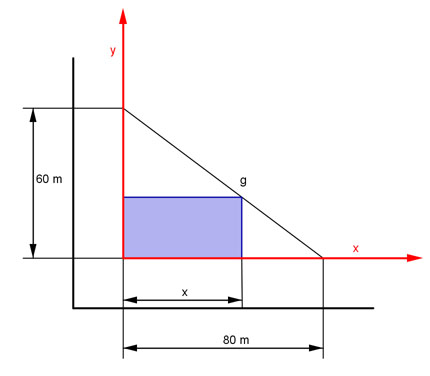
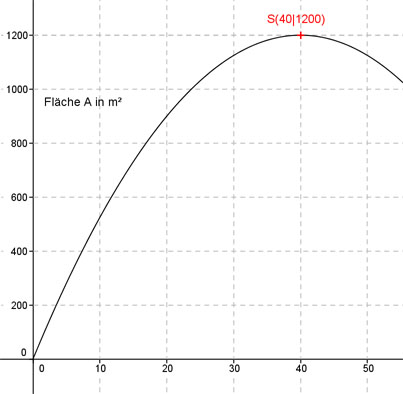

Aufgabe 130 Der Eigentümer will das dreieckige Grundstück bebauen. Es liegt zwischen den beiden, sich rechtwinklig kreuzenden Straßen. Wie groß wird die Fläche A des rechtwinkligen blauen Bauplatzes maximall?  Bestimmung der Funktionsgleichung für die Gerade g: Allgemein: y = mx + b b, den Schnittpunkt mit der y-Achse, kann man ablesen: b = 60 Steigung m: m ist negativ, die Gerade fällt: 60 3 m = - ---- = - --- 80 4 oder P1(0|60), P2(80|0) abgelesen y2 - y1 0 - 60 60 3 m = -------- = -------- = - ---- = - --- x2 - x1 90 - 0 80 4 y = - 0,75x + 60 Die eine Seite des Rechtecks sei x Die andere ist -0,75x + 60 Die Fläche A des Rechtecks ist: A(x) = x * (-0,75x + 60) A(x) = -0,75 * x2 + 60x Dies ist die Funktionsgleichung einer nach unten geöffneten, gestauchten Parabel, deren höchster Punkt der Scheitelpunkt ist. A(x) = -0,75 * x2 + 60x |:(-0,75) A(x) - ------ = x2 - 80x 0,75 Quadratische Ergänzung: A(x) - ------ = x2 - 80x + 1 600 - 1600 0,75 mit x2 - 80x + 1 600 = (x - 40)2 A(x) - ------ = (x - 40)2 - 1 600 |*(-0,75) 0,75 A(x) = -0,75(x - 40)2 + 1 200 Scheitelpunkt abgelesen: S(40|1200) Die Scheitelpunktkoordinaten bedeuten: Wird die Länge x = 40 m gewählt, dann entsteht die größte Fläche A = 1 200 m². 